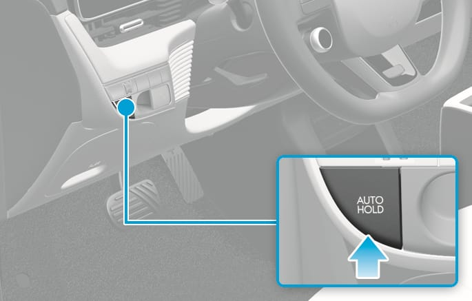
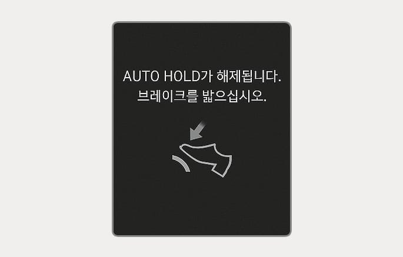

자동 정차(Auto Hold)
주행 중 차량이 완전히 정차한 후 브레이크 페달에서 발을 떼도 차량이 정지 상태를 유지하도록 할 수 있습니다.
-
기어 위치가 D(주행) 또는 R(후진)일 때 가속 페달을 밟으면 자동 정차가 해제되며 차량이 출발합니다.
자동 정차 기능이 작동 대기 중 또는 작동 중일 때 시동을 껐다 켜면 작동 대기 상태가 유지됩니다.

2C_AutoHoldButtonOnOff
자동 정차 기능 켜기
정차 중 브레이크 페달을 밟은 상태로 AUTO HOLD 버튼을 누르십시오.
-
자동 정차 기능이 켜지며
N 표시등이 흰색으로 켜집니다. -
주행 중 브레이크 페달을 밟아 정차하면 자동 정차 기능이 작동하며
N 표시등이 초록색으로 바뀝니다. 이후 브레이크 페달에서 발을 떼어도 차량이 정지 상태를 유지합니다. -
가속 페달을 밟으면 정차 상태가 자동으로 해제되며 차량이 출발합니다.
-
주차 브레이크 적용 중에는 자동 정차 기능이 작동하지 않습니다.
자동 정차 기능 끄기
정차 중 브레이크 페달을 밟은 상태로 AUTO HOLD 버튼을 누르십시오.
-
자동 정차 기능이 꺼지며 클러스터의
N 표시등이 꺼집니다.
시동을 껐다 걸어도 현재 자동 정차 설정이 유지됩니다.
-
가속 페달을 부드럽게 밟아 천천히 출발하십시오. 가속 페달을 세게 밟으면 차량이 빠르게 출발할 수 있습니다.
-
전방 차량과의 거리가 매우 가깝거나 내리막에서 정차한 경우, 안전을 위해 출발 전 자동 정차 기능을 끄십시오.
-
차량을 주차하기 위해 천천히 이동하려는 경우 또는 차량의 바퀴가 움직이며 작동하는 자동 세차기에 진입하기 전에는 자동 정차 기능을 끄십시오.
-
안전벨트, 운전석 도어, 후드 등의 작동 상태가 정상적으로 인식되지 않는 경우, 자동 정차 기능 및 주차 브레이크가 정상적으로 작동하지 않을 수 있으므로 주의하십시오.
-
N 표시등이 노란색으로 켜진 경우 자동 정차 기능에 이상이 발생한 것을 의미하므로, 당사 직영 하이테크센터나 블루핸즈에서 차량을 점검하십시오. -
클러스터에 자동 정차가 해제된다는 경고문이 표시되는 경우 자동 정차 기능과 주차 브레이크가 작동하지 않을 수 있습니다. 이런 경우 직접 브레이크 페달을 밟아 정차 상태를 유지하십시오.

2C_AutoHoldPressureBreakInfo
-
운전석 도어, 후드 및 테일게이트가 닫혀 있으며, 브레이크 페달을 밟아 차량이 정차한 상태에서만 자동 정차 기능이 작동합니다.
-
변속기 위치가 P이거나 주차 브레이크가 작동하는 중에는 자동 정차 기능이 작동하지 않습니다.
-
자동 정차 기능 작동 중, 다음과 같은 경우에는 안전을 위해 주차 브레이크가 자동으로 체결됩니다.
-
운전석 도어, 후드, 테일게이트가 열린 경우
-
가파른 언덕이나 내리막에 정차한 경우
-
자동 정차 기능이 장시간 지속된 경우
-
차량의 움직임이 여러 번 감지된 경우
-